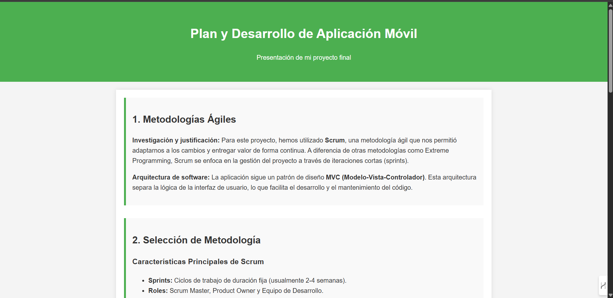
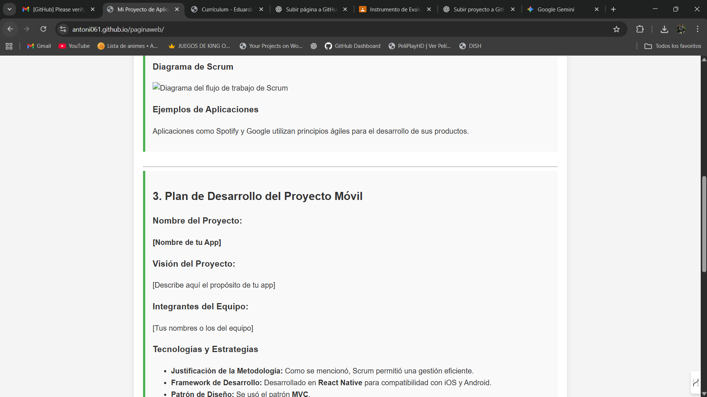

1. Metodologías Ágiles
Investigación y justificación: Para este proyecto, hemos utilizado Scrum, una metodología ágil que nos permitió adaptarnos a los cambios y entregar valor de forma continua. A diferencia de otras metodologías como Extreme Programming, Scrum se enfoca en la gestión del proyecto a través de iteraciones cortas (sprints).
Arquitectura de software: La aplicación sigue un patrón de diseño MVC (Modelo-Vista-Controlador). Esta arquitectura separa la lógica de la interfaz de usuario, lo que facilita el desarrollo y el mantenimiento del código.
2. Selección de Metodología
Características Principales de Scrum
- Sprints: Ciclos de trabajo de duración fija (usualmente 2-4 semanas).
- Roles: Scrum Master, Product Owner y Equipo de Desarrollo.
- Artefactos: Product Backlog, Sprint Backlog e Incremento del producto.
¿Cuándo usar Scrum?
Es ideal para proyectos con requisitos cambiantes o para equipos que necesitan un alto grado de flexibilidad.
Diagrama de Scrum

Ejemplos de Aplicaciones
Aplicaciones como Spotify y Google utilizan principios ágiles para el desarrollo de sus productos.
3. Plan de Desarrollo del Proyecto Móvil
Nombre del Proyecto:
App de Recetas Saludables
Visión del Proyecto:
La visión de este proyecto es crear una aplicación móvil que facilite a los usuarios encontrar y guardar recetas saludables, promoviendo un estilo de vida más consciente y nutritivo a través de una interfaz amigable y organizada.
Integrantes del Equipo:
Antonio
Tecnologías y Estrategias
- Justificación de la Metodología: Scrum nos permitió gestionar los cambios en las funcionalidades de la aplicación, como la adición de nuevas categorías de recetas o filtros de búsqueda, de manera eficiente en cada sprint.
- Framework de Desarrollo: Desarrollado en React Native para asegurar la compatibilidad con dispositivos iOS y Android desde un único código base.
- Patrón de Diseño: Se usó el patrón MVC para mantener la lógica del negocio separada de la interfaz de usuario, facilitando el desarrollo en equipo.
- Plan de Desarrollo: Se dividió en 3 sprints. El primero se enfocó en el diseño y la navegación básica. El segundo en las funcionalidades de búsqueda y guardado de recetas. El tercero en la adición de funcionalidades avanzadas como la creación de listas de compras.
- Estrategias de Prueba: Se realizaron pruebas unitarias para cada componente y pruebas de integración para asegurar que la comunicación entre el front-end y el back-end funcionara correctamente. También se llevaron a cabo pruebas manuales de la interfaz de usuario.
- Estrategias de Versionamiento: Se gestionó el código con Git y GitHub. Se crearon ramas para cada nueva funcionalidad para evitar conflictos y se realizaron `merges` al finalizar cada sprint.
4. Desarrollo de la Aplicación
El objetivo:
El objetivo principal de la aplicación es proporcionar una herramienta simple y eficaz para que los usuarios puedan explorar, buscar y guardar recetas saludables, con la opción de filtrar por tipo de comida, ingredientes o tiempo de preparación.
Breve resumen del proceso:
El proceso de desarrollo comenzó con la ideación y un prototipo inicial. En el primer sprint, diseñamos la estructura de la app y la navegación principal. El segundo sprint se centró en la implementación de la base de datos de recetas y la funcionalidad de búsqueda. Finalmente, el tercer sprint se dedicó a pulir la interfaz, implementar la función de "guardar como favorito" y resolver los errores finales. El uso de Scrum nos permitió hacer un seguimiento constante del progreso y adaptarnos a las necesidades que surgieron durante el desarrollo.
Pantallas de la Aplicación:
 Conclusión:
Este proyecto me enseñó la importancia de la planificación ágil y el trabajo en equipo. La experiencia me preparó para enfrentar desafíos reales en el desarrollo móvil y me demostró que una buena metodología es clave para el éxito de cualquier proyecto.